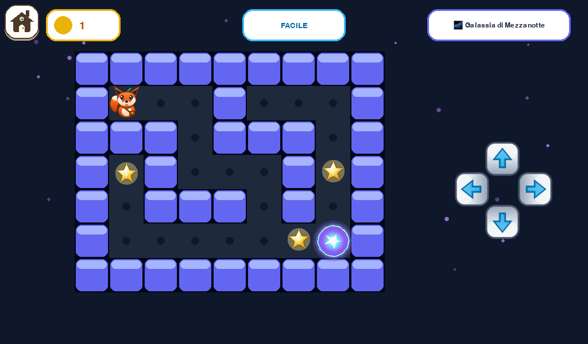

greia
greia01 / A different kind of computer
HELLO,
CURIOUS.
A real world to create, play, learn and explore. Made for little hands and big questions.


01 / 05 — Hello Greia
Tap the real boot artwork to replay it
✳
02 / Create
MAKE
STUFF.
Paint a place. Write a story. Keep both in your own profile. The first Greia experience begins with making.


02 / 05 — Make something
Actual development capture
03 / Play
TRY.
JUMP.
AGAIN.
Puzzles and little worlds invite action. Clear controls let the play begin without a lesson in computers.

03 / 05 — Find your way
Actual development capture
04 / Explore
WHAT
IF?
Follow a question underwater, into a garden, or wherever curiosity points next.


04 / 05 — Follow wonder
Actual development capture
05 / Thoughtful under the fun
THEIR
WORLD.
THEIR
WAY.
One profile for every child. Offline-first activities. A familiar way Home. Greia is the child's graphical world, with grown-up management kept separate.
Profiles of their ownWorks offlineHome belongs to GreiaWriting + painting from the start
See all three concepts ↗05 / 05 — Greia is in pre-public development